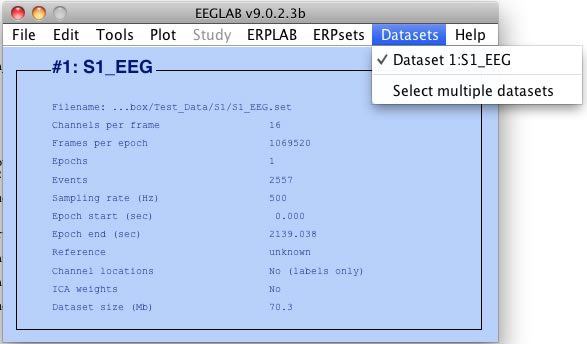
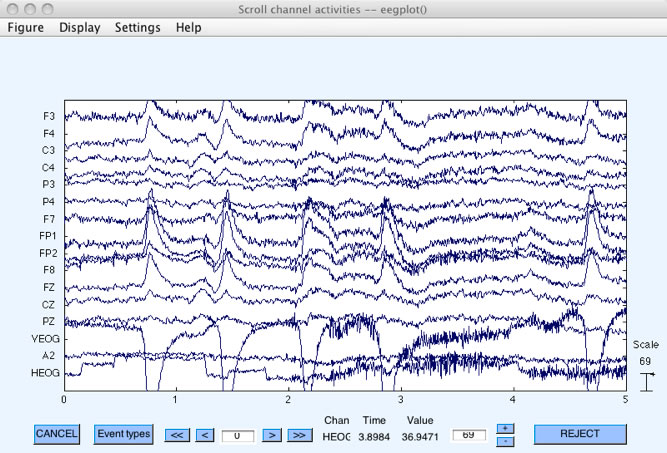
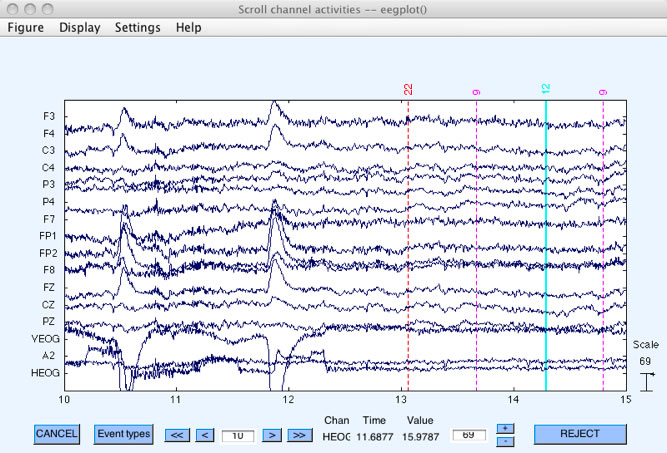

We assume that you have already installed EEGLAB and ERPLAB, as described in the ERPLAB Toolbox User's Manual.
To begin this tutorial, we recommend that you start afresh with EEGLAB and ERPLAB. To do this, close the main EEGLAB window and type "clear all" and then "eeglab" in the Matlab command window (each Matlab command should be followed with the return or enter key). It is a good idea to follow this procedure when you encounter bugs or unexplained problems with EEGLAB and/or ERPLAB.
In EEGLAB > File > Memory and other options, you should make sure that it is set to allow multiple datasets to be loaded in memory. That is, make sure that "If set, keep at most one dataset in memory" is NOT checked.
Next you need to put the tutorial files on your hard drive. You can download them from the ERPLAB documentation area of the erpinfo.org web site. The data and related files are in a folder named Test_Data, which you can put anywhere on your computer's file system.
The data from the first subject we will be processing is in a subfolder named S1, and you should make this folder the current directory in the Matlab command window. At the top of the Matlab command window, there is a drop-down menu displaying the current directory (see screenshot below). Click on the browse button (labeled with '…') to the right of the current directly and choose the S1 folder. The top of the window will then look something like this (although the details depend on what operating system you are using):
Next you will need to load the raw EEG data from the first subject into EEGLAB. To do this, select File > Load existing dataset from the EEGLAB GUI, and open the file S1_EEG.set. This file is what EEGLAB calls a "dataset." There is an associated file, S1_EEG.fdt, which contains the actual EEG data points and must be present (but which is accessed indirectly). The dataset contains a large amount of information, and EEGLAB may take several seconds to load the dataset. EEGLAB prints some information in the command window while it is processing the file, finishing with "Done" when the file has finished loading. (Both EEGLAB and ERPLAB print useful information such as this in the command window, and you should get in the habit of keeping an eye on this window.)
Hint: Using EEGLAB and ERPLAB requires a little bit of patience. If you try to start the next procedure before the current procedure is done, you will cause problems that will ultimately slow you down. This is especially true of procedures that create or load datasets. So just take a sip of coffee and wait until you see "Done" in the command window before you take the next step. Making sure that your computer has lots of RAM (and the 64-bit version of Matlab along with a 64-bit operating system) can make things go much faster.
When the dataset has finished loading, it will be visible in the Datasets menu, as shown in the following screenshot.

Equivalent Script Command:
%Load S1_EEG.set
%Filename is S1_EEG.set
%Note that you will need to replace the path with the actual location in your file system
%Make sure that your file names and folder names do not contain spaces or other special characters
%Note that the dataset will not appear in the Datasets menu in the EEGLAB GUI
EEG = pop_loadset('filename', 'S1_EEG.set', 'filepath', '/Users/etfoo/Desktop/tutorial_script/');
%Alternatively, the following version will look for the file in Matlab's Current Folder
EEG = pop_loadset('filename', 'S1_EEG.set');
%You can then see the data with the following command:
pop_eegplot(EEG);
You can now look at the data with Plot > Channel data (scroll), as shown in the following screenshot (see the EEGLAB documentation for information about how to use this function).

If you scroll 10 seconds (by clicking the ">>" button twice), you will see vertical lines and numbers, which show the event codes (aka stimulus markers, trigger codes), as shown here:

Equivalent Script Command:
%To plot the data in the current EEG structure, use this EEGLAB command:
pop_eegplot(EEG);
| <<Overview and Scripting | Table of Contents | Example Experiment>> |